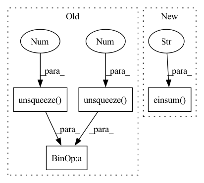

Pattern ID :35261

Before Change
mm(N,k,1,f,f @ N,1,1,f,1)->(N,k,1,f,1); view->(N,k*c_in,f)
W: (N, c_out, f)
"""
return self.conv(((adj.unsqueeze(2) @ x.unsqueeze(-1).unsqueeze(1)).view(x.size(0), self.in_channels, self.in_features))).view(x.size(0), self.out_channels, self.out_features)
def feature_adjacency(self, x, y):
"""
After Change
"""
////// TODO current adj is symetric TODO try conv2d
//(adj@ x.unsqueeze(-1).unsqueeze(1)).view(x.size(0), self.in_channels, self.in_features)
return self.conv(torch.einsum("nkcaf,ncf->nkca", adj, x)).view(x.size(0), self.out_channels, self.out_features)
def feature_adjacency(self, x, y):
"""
In pattern: SUPERPATTERN
Frequency: 3
Non-data size: 4
Instances
Fragment ID: 100307386
Project Name: wang-chen/lgl
Commit Name: ebc84a912f586da8324be45f1f848498fb2d2299
Time: 2021-01-30
Author: yuhengq@andrew.cmu.edu
File Name: models/layer.py
M Class Name: FeatTransKhop
N Class Name: FeatTransKhop
M Method Name: transform(3)
N Method Name: transform(3)
M Parent Class: nn.Module
N Parent Class: nn.Module
M File Name: models/layer.py
N File Name: models/layer.py
M Start Line: 141
M End Line: 141
N Start Line: 150
N End Line: 150
'>
Before Change
return self.conv((adj.unsqueeze(1) @ x.unsqueeze(-1)).squeeze(-1)).view(x.size(0), self.out_channels, self.out_features)
def feature_adjacency(self, x, y):
fadj = torch.stack([(x[i].unsqueeze(-1) @ y[i].unsqueeze(-2)).sum(dim=[0,1]) for i in range(x.size(0))])
fadj += fadj.transpose(-2, -1)
return self.row_normalize(self.sgnroot(fadj))
After Change
return self.conv((adj.unsqueeze(1) @ x.unsqueeze(-1)).squeeze(-1)).view(x.size(0), self.out_channels, self.out_features)
def feature_adjacency(self, x, y):
fadj = torch.stack([torch.einsum("ca,ncb->ab", x[i], y[i]) for i in range(x.size(0))])
fadj += fadj.transpose(-2, -1)
return self.row_normalize(self.sgnroot(fadj))
'>
Fragment ID: 100307387
Project Name: wang-chen/lgl
Commit Name: a75a8d1187cd17c8bb7f5591aa71f85188ad4f4c
Time: 2020-12-09
Author: jeffsan@gmx.com
File Name: models/layer.py
M Class Name: FeatTrans1d
N Class Name: FeatTrans1d
M Method Name: feature_adjacency(3)
N Method Name: feature_adjacency(3)
M Parent Class: nn.Module
N Parent Class: nn.Module
M File Name: models/layer.py
N File Name: models/layer.py
M Start Line: 84
M End Line: 84
N Start Line: 84
N End Line: 84
'>
Before Change
return x, neighbor
def transform(self, x, adj):
return self.conv((adj.unsqueeze(1) @ x.unsqueeze(-1)).squeeze(-1)).view(x.size(0), self.out_channels, self.out_features)
def feature_adjacency(self, x, y):
fadj = torch.stack([torch.einsum("ca,ncb->ab", x[i], y[i]) for i in range(x.size(0))])
After Change
"""
//(adj @ x.unsqueeze(-1)).squeeze(-1)
return self.conv(torch.einsum("ncaf,ncf->nca", adj, x)).view(x.size(0), self.out_channels, self.out_features)
def feature_adjacency(self, x, y):
fadj = torch.stack([torch.einsum("ca,ncb->cab", x[i], y[i]) for i in range(x.size(0))])
'>
Fragment ID: 100307391
Project Name: wang-chen/lgl
Commit Name: ebc84a912f586da8324be45f1f848498fb2d2299
Time: 2021-01-30
Author: yuhengq@andrew.cmu.edu
File Name: models/layer.py
M Class Name: FeatTrans1d
N Class Name: FeatTrans1d
M Method Name: transform(3)
N Method Name: transform(3)
M Parent Class: nn.Module
N Parent Class: nn.Module
M File Name: models/layer.py
N File Name: models/layer.py
M Start Line: 81
M End Line: 81
N Start Line: 90
N End Line: 90